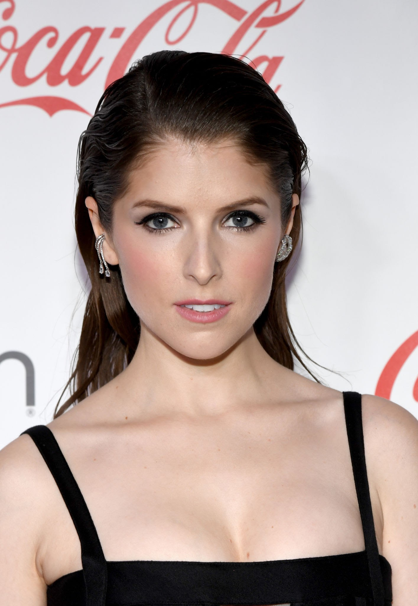
Beca | Anna Kendrick
This aca-queen was born Anna Cooke Kendrick on August 9th, 1985 in Portland Maine. Her voice may be big but she only stands at a whopping 5'2".
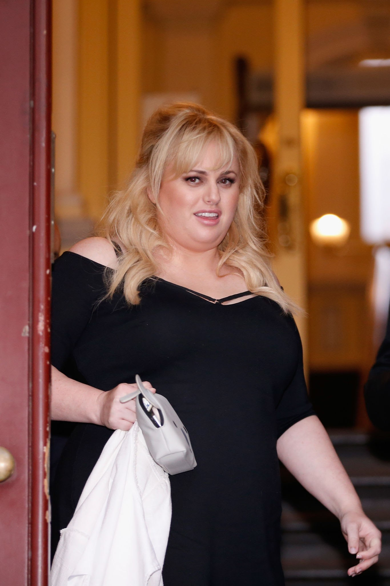
Fat Amy | Rebel Wilson
This "horizontal running" aca-lady was born Melanie Elizabeth Bownds on March 2nd, 1980 in Sydney, Australia. Pitch Perfect was one of her breakthrough roles as an actress.

Chloe | Brittany Snow
This "ginger" was born Brittany Anne Snow on March 9th, 1986 in Tampa, Florida. Believe it or not but she started her acting career on Guiding Lights.
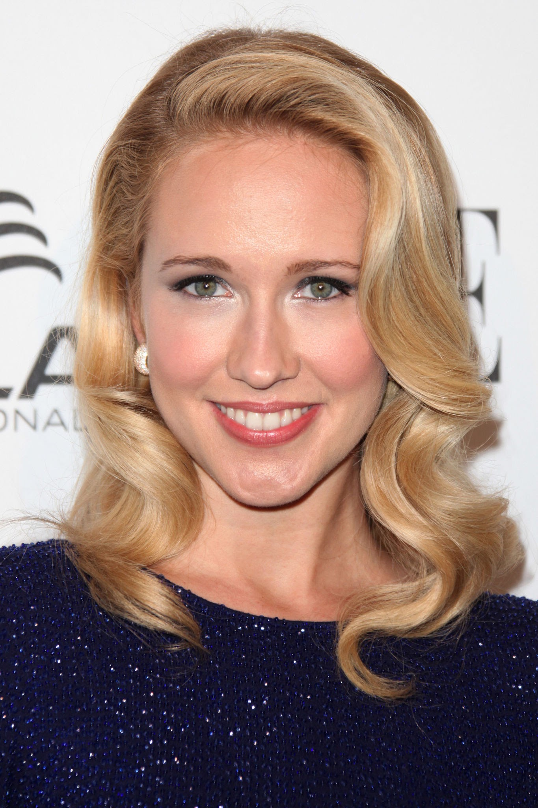
Aubrey | Anna Camp
Aca-Believe-It! This aca-star was born Anna Ragsdale Camp on September 27th, 1982 in Aiken, South Carolina. She's had roles in True Blood, The Mindy Project, and the Help.
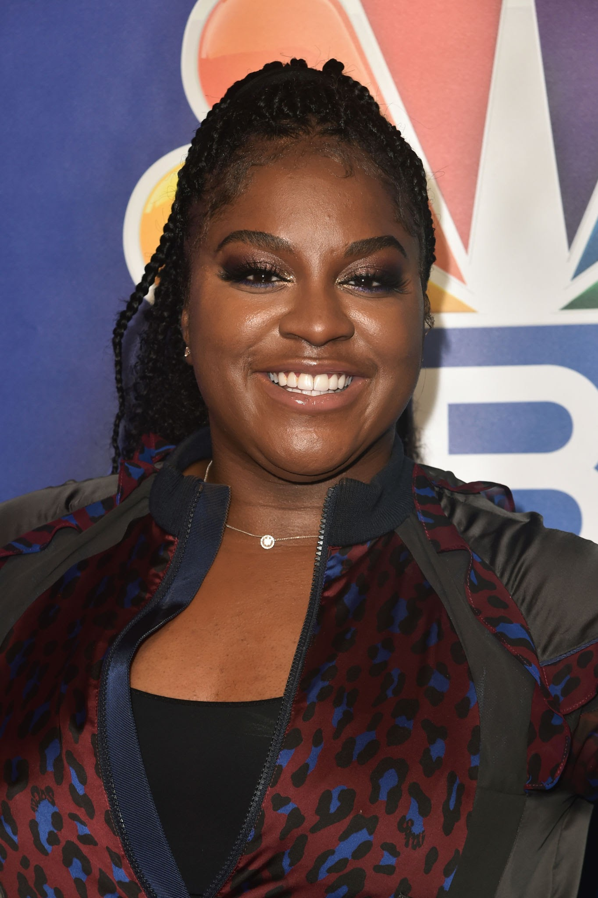
Cynthia Rose | Ester Dean
This Bella was born Ester Renay Dean on Deceember 15th, 1986 in Muskogee, Oklahoma. Outside of her acting career Ester is also a songwriter and singer.
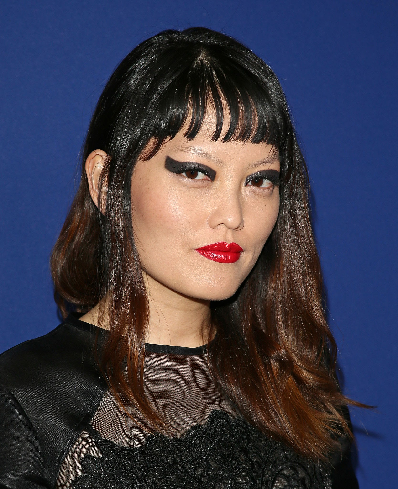
Lilly | Hana Mae Lee
This fire setting Bella was born Hana Mae Lee on September 28th, 1988 in San Fernando Valley, California. Hana is also a fashion designer, artist, filmmaker, make-up artist and writer.
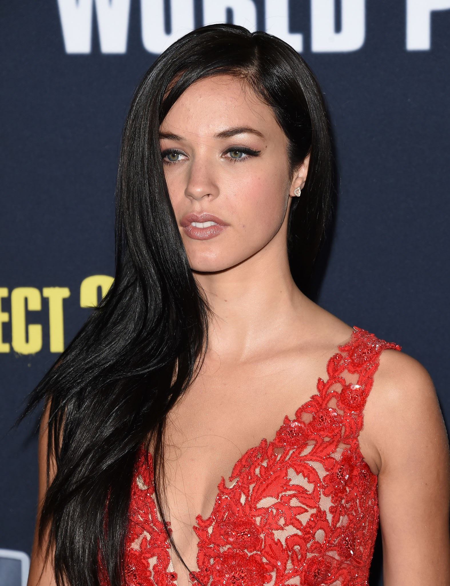
Stacie | Alexis Knapp
This always polished Bella was born Alexis Merizalde Knapp on July 31st, 1989 in Allegheny, Pennsylvania. Before acting, Alexis was a model. She was also married to Ryan Phillippe.
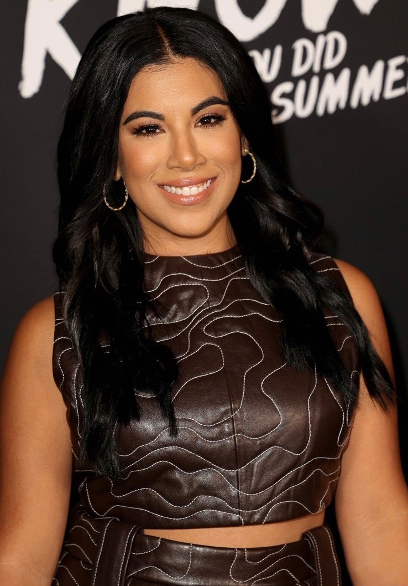
Flo | Chrissie Fit
This Cuban-American bella was born on April 3rd, 1984 in Miami, Florida. If you thought she looked familiar it might be because she was in Disney Channel's "Teen Beach Movie."
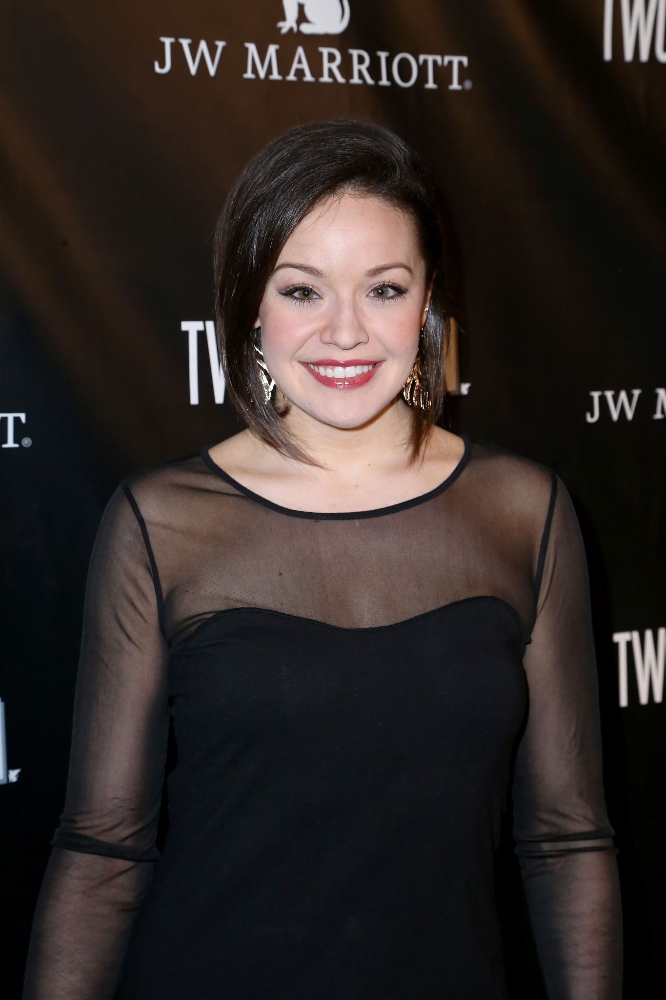
Ashley | Shelley Regner
This "I've been here the whole time" Bella was born Shelley Anne Regner on December 21st, 1988 in Baton Rouge, Louisiana. Pitch Perfect was Shelley's break into acting.
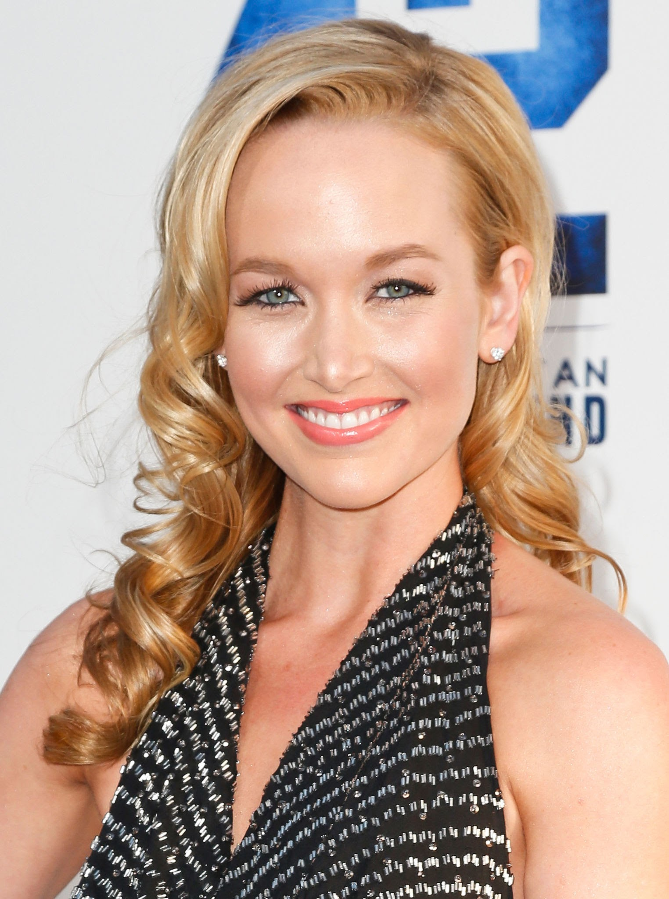
Jessica | Kelley Jakle
This "invisible" Bella was born Kelley Jakle on June 27th, 1989 in Sacramento, California. Believe it or not but Kelley was a member of USC's SoCal VoCals, and they won the International Competiton of collegiate Acappella twice.
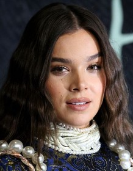
Emily | Hailee Steinfeld
This junior Bella was born Hailee Steinfeld in Tarzana, California on December 11th, 1996. Hailee has been acting from a young age and wants to one day be on the other side of the camera to direct and produce.
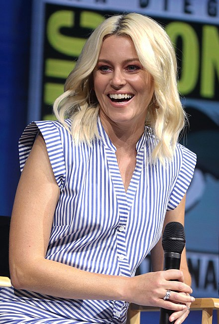
Gail | Elizabeth Banks
This vivacious, quick witted aca-commentator was born Elizabeth Mitchell on February 10th, 1974 in Pittsfield Massachusetts. She founded her production company Brownstone Productions with her husband. Her most recent production was Cocaine Bear.
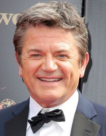
John | John Michaels Higgins
This chauvinistic dry humored aca-commentator was born on February 12th, 1963 in Boston, Massachusetts. While attending Amherst College, he led the all-male a cappella group, The Zumbyes.